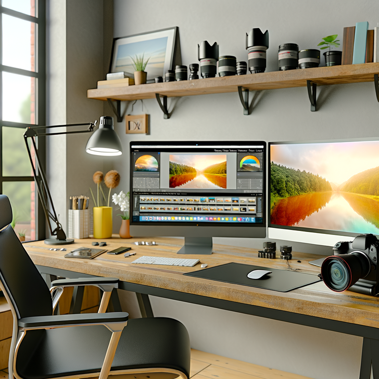
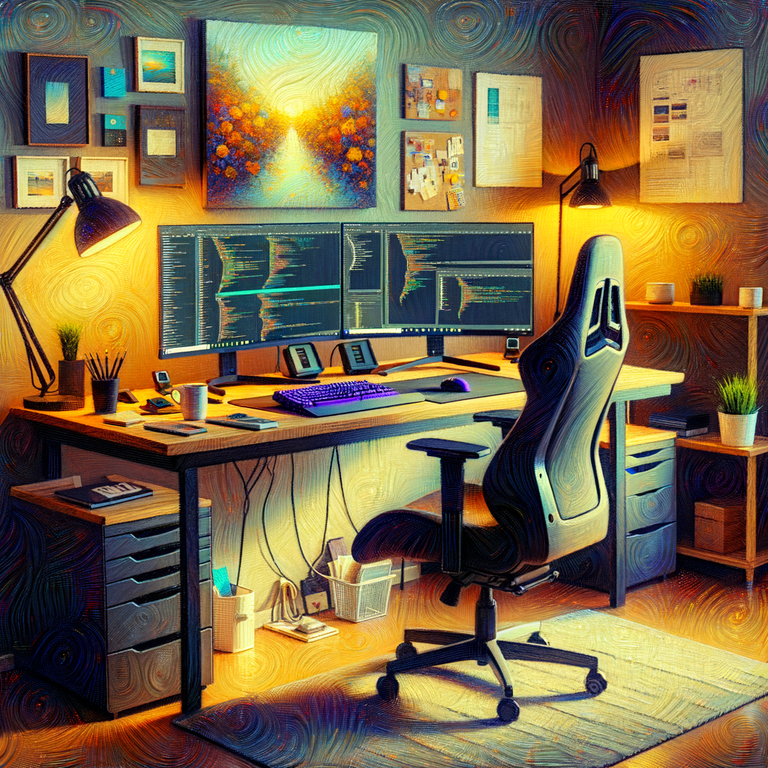

Microservices .NET
Van monoliet naar microservices: complete gids voor het bouwen van .NET microservices met Docker.
Inzichten, tips en verhalen over fotografie, .NET ontwikkeling en mijn workflow
Hier vind je mijn gedachten en ervaringen over onderwerpen die me bezighouden. Van technische .NET tips tot fotografische inspiratie.

Van monoliet naar microservices: complete gids voor het bouwen van .NET microservices met Docker.

Ontdek hoe je meer diepte en drama in je landschapsfoto's kunt brengen met deze praktische technieken voor compositie, licht en timing.

Waarom zwart-wit fotografie nog steeds relevant is en hoe je krachtige, emotionele monochrome beelden creëert die verhalen vertellen.

Fotografie, en vooral Landschapsfotografie is op de juiste plek op het juiste tijdstip zijn. Maar waarom moet ik vroeg opstaan?

Een kijkje in mijn workflow. Welke tools en technieken ik gebruik.

Een kijkje in mijn workflow. Welke tools en technieken ik gebruik.
Meer artikelen binnenkort beschikbaar!
Volg mij op sociale media voor updates over nieuwe artikelen.